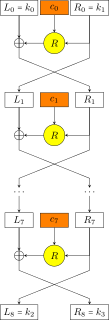

1.3. Kuznyechik¶
Kuznyechik là một thuật toán mã hóa khối, đối xứng như AES. Kuznyechik tiếng Nga là Кузнечик, có nghĩa là châu chấu. Tuy nhiên trong văn bản quốc tế thì chúng ta giữ nguyên tên gọi là hệ mã Kuznyechik.
Mã khối Kuznyechik biến đổi trên khối \(128\) bit, độ dài khóa là \(256\) bit, biến đổi trên \(9\) vòng. Kuznyechik sử dụng mô hình SPN tương tự như AES, trở thành chuẩn mã hóa của Nga và được định nghĩa trong GOST R 34.12-2015.
Một điểm đặc biệt là quá trình biến đổi qua các vòng sử dụng mạng SPN, tuy nhiên thuật toán sinh khóa con cho các vòng sử dụng mô hình Feistel.
Phần này tham khảo chính từ [5].
1.3.1. Mã hóa¶
Gọi \(k_i\) là khóa con của vòng thứ \(i\), \(i = 0, 1, \ldots, 9\). Ta có các động tác biến đổi sau:
1.3.1.1. Phép biến đổi \(X\)¶
Hàm \(X: \mathbb{F}_2^{128} \to \mathbb{F}_2^{128}\) biến đổi trên block \(128\) bits.
Ta chia block đầu vào thành \(16\) cụm \(8\) bit, kí hiệu
với ký tự \(\Vert\) chỉ việc nối các chuỗi bit (concatenate). Tương tự \(k_i\) cũng được chia thành \(16\) cụm \(8\) bits. Khi đó,
Nói cách khác, chúng ta xor \(128\) bit của khối đầu vào và \(128\) bit của khóa con \(k_i\).
1.3.1.2. Phép biến đổi \(S\)¶
Hàm \(S: \mathbb{F}_2^{128} \to \mathbb{F}_2^{128}\).
Block đầu vào tiếp tục được chia thành \(16\) cụm \(8\) bits. Mỗi cụm sẽ đi qua một bảng tra cứu SBox (gọi là bảng \(\pi\)). Sau đó ta nối các kết quả với nhau.
Bảng \(\pi\) được định nghĩa sẵn và không tuyến tính, nên đây là bước không tuyến tính của thuật toán.
1.3.1.3. Phép biến đổi \(L\)¶
Hàm \(L: \mathbb{F}_2^{128} \to \mathbb{F}_2^{128}\).
Block đầu vào vẫn được chia thành \(16\) cụm \(8\) bit. Tuy nhiên ở đây mỗi cụm \(8\) bit biểu diễn một đa thức trong trường \(\mathrm{GF}(2^8)\) với đa thức tối giản là \(g(x) = x^8 + x^7 + x^6 + x + 1\). Những phép tính cộng và nhân sau đây cũng được thực hiện trên trường \(\mathrm{GF}(2^8)\) này.
Tiếp theo, ta định nghĩa hàm \(\Lambda: \mathbb{F}_2^{128} \to \mathbb{F}_2^{128}\) như sau
Hình 1.3 Hàm \(\lambda\)¶
Lưu ý rằng sau khi tính toán trên hàm \(\lambda\), đa thức trên \(\mathrm{GF}(2^8)\) được chuyển trở lại thành cụm \(8\) bit sau đó mới nối vào dãy \(a_1\), \(a_2\), ..., \(a_{15}\) như mô tả ở Hình 1.3.
Cuối cùng, hàm \(L\) ban đầu là thực hiện hàm \(\Lambda\) \(16\) lần.
Như vậy, phép biến đổi trên vòng thứ \(i\) với khóa con \(k_i\) là
với \(i = 0, 1, \ldots, 8\).
Ở vòng thứ \(10\) ta XOR với khóa con \(k_9\) nữa: \(X(k_9, a)\).
1.3.2. Thuật toán sinh khóa con¶
Để sinh khóa con cho \(10\) lần XOR, thuật toán Kuznyechik dùng mô hình Feistel. Đầu tiên ta định nghĩa hàm \(F(c, a)\). Với \(c\) bất kì thuộc \(\mathbb{F}_2^{128}\) và \(a = a_0 \Vert a_1\) thuộc \(\mathbb{F}_2^{256}\). Hàm \(F(c, a)\) biến phần tử thuộc \(\mathbb{F}_2^{128} \times \mathbb{F}_2^{256}\) thành phần tử thuộc \(\mathbb{F}_2^{256}\) bằng đẳng thức
với hàm \(R\) được định nghĩa ở phương trình (1.8).

Hình 1.4 Biến đổi từ khóa \(k_0 \Vert k_1\) thành \(k_2 \Vert k_3\)¶
Với khóa đầu vào là \(k \in \mathbb{F}_2^{256}\), mình kí hiệu ở dạng ghép hai chuỗi \(128\) bits \(k = k_0 \Vert k_1\) với \(k_0, k_1 \in \mathbb{F}_2^{128}\) là những khóa con mở đầu. Khi đó các khóa con cho \(10\) phép XOR là \(k_0\), \(k_1\), ..., \(k_9\).
Thuật toán sinh khóa con được sử dụng như sau
với \(i = 0, 1, 2, 3\). Thuật toán có thể mô tả ở Hình 1.4.
Theo đó, các số \(c_0\), \(c_1\), ..., \(c_7\) được sử dụng để sinh khóa \(k_2 \Vert k_3\) từ \(k_0 \Vert k_1\). Tương tự, \(c_8\), \(c_9\), ..., \(c_{15}\) được dùng để sinh khóa \(k_4 \Vert k_5\) từ khóa \(k_2 \Vert k_3\). Các số \(c_0\), \(c_1\), ..., \(c_{31}\) được định nghĩa trong tiêu chuẩn.
1.3.3. So sánh Kuznyechik với AES¶
Điểm giống nhau là cả hai thuật toán đều có phần tuyến tính và phần không tuyến tính. Về phần tuyến tính, đối với AES là các động tác Shift Rows, Mix Columns và Add Round Key, còn đối với Kuznyechik là hàm \(X\) và \(L\) bên trên. Về phần không tuyến tính đều là việc sử dụng một bảng tra cứu SBox của riêng thuật toán đó.
Điểm khác nhau đầu tiên là cách xây dựng ma trận tính toán. Nếu ta xem xét Shift Rows và Mix Columns dưới dạng phép nhân ma trận trên \(\mathrm{GF}(2^8)\) thì ta thấy rằng ma trận chứa nhiều số \(0\) nhất có thể. Điều này giúp tăng tốc độ tính toán. Về phần Kuznyechik, phép tính ở hàm \(\lambda\) cũng thực hiện trên \(\mathrm{GF}(2^8)\) nhưng không chứa bất kì số \(0\) nào. Điều này làm tăng độ phức tạp tính toán nhưng cũng làm tăng tính an toàn.
Điểm khác nhau tiếp theo là việc sinh khóa con. AES sử dụng thuật toán sinh khóa con từng vòng từ toàn bộ \(256\) bit ban đầu. Trong khi Kuznyechik sử dụng mô hình Feistel, theo đó với \(256\) bit ban đầu được sử dụng cho hai vòng đầu, cứ mỗi hai khóa con sẽ sinh ra hai khóa con tiếp theo. Như vậy thuật toán sinh khóa con ít phức tạp hơn AES (Kuznyechik cần \(5\) lần sinh khóa còn AES \(14\) lần).